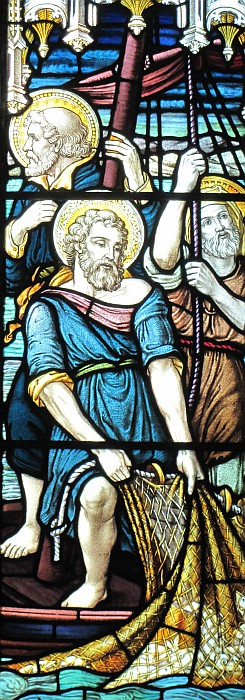

Épis, Jésû appathut ès discipl'yes au bord du Lac Tibériade, et né v'là coumme tchi qu'i' s'adonnit:
Ches'-chîn 'taient ensembl'ye: Simon Pièrre; Thomas l'Jeunmé; Nathanaël, dé Cana en Galilée; les fis d'Zébédée, et acouo deux des discipl'yes.
Et Simon Pièrre lus dit, “Assa, j'm'en vais à la pêque, mé.” Et ieux, i' rêponnîtent, “J'allons aller acanté té étout.” Et i' lus embèrtchîtent dans un baté, mais chutte séthée-là i' n'happîtent rein du tout.
Et à sinne dé jeu, né v'là Jésû tchi s'trouvit au bord du lac, mais les discipl'yes n'èrconnaissaient pon acouo qué ch'tait Jésû.
Et Jésû lus dit, “Mes p'tits, av'-ous d'tchi à mangi?” I' rêponnîtent, “Ma fé, nânnîn!”

I' lus dit don, “Halez vot' drannet par lé bord dé drouaite dé vot' baté, et ous en éthez, du paîsson.” Et i' halîtent lé drannet don, mais i' n'pouvaient pus lé l'ver car y'avait un fièr fliotchet d'paîssons d'dans.
Et iun des discipl'yes, lé chein qu'Jésû aimait, r'mèrtchit à Pièrre, “Ch'est l'Seigneu!” Et Simon Pièrre, quand i' ouït qué ch'tait l'Seigneu, mînt sa câsaque dé pêtcheux – car i' 'tait d'sabilyi pouor lé travas – et s'fliantchit à l'ieau.
Et l's aut's discipl'yes arrivîtent dans lé p'tit baté – car i' n'taient pon bein liain d'la tèrre, seulement à eune chentaine dé vèrgues – halant lus grand' pêque dé paîssons.
Quand i' r'fûtent sus la grève, il' y vîtent un feu, auve du paîsson d'ssus, et du pain.
Jésû lus dit: “Apportez tchiqu's'uns des paîssons qu'ous avez justément happé.”
Simon Pièrre r'allit au baté et halit l'drannet sus la tèrre, et v'là tchi 'tait remplyi d'chent chînquante-trais grands paîssons, mais même auve un si grand nombre, lé drannet n'tait pon trilyi.
Jésû lus dit: “V'nez dêjeuner!” Mais i' n'y'avait pon iun d'entre les discipl'yes tch'osait d'mander “Tchi qu'tu'es, té?” car i' savaient bein qué ch'tait l'Seigneu.
Et Jésû vînt, prînt du pain et lus en donnit, et il en fît d'même auve lé paîsson.
Chennechîn ch'tait bein la traîsième fais qu'Jésû appathut ès discipl'yes dépis qu'il avait 'té r'ssuscité.
Quand il avait mangi, Jésû d'mandit à Simon Pièrre: “Simon, fis Jônas, m'aime-tu mus qu'ches'-chîn?” Et i' rêponnit: “Oui-dgia! Tu sai qu'ch'est bein vrai qué j't'aime!” Et Jésû lî dit: “Donne à mangi à m's angnieaux, don.”
Épis i' r'démandit: “Simon, fis Jônas, m'aime-tu vraînment?” “Bein seu qu'oui, man Seigneu,” qu'i' rêponnit. “J't'aime bein.” Et Jésû lî dit: “Garde mes brébis, don.”
I' lî d'mandit eune traîsième fais: “Simon, fis Jônas, est-tu vraînment seux qué tu m'aime?” Et Pièrre fut bein gêné pa'ce qu'il avait d'mandé la tchestchion d'même trais fais: “M'aime-tu?” et i' lî rêponnit, “Seigneu, tu sai tout ch'qu'i' y'a, et tu sai bein qué j't'aime.” Et Jésû lî dit: “Donne à mangi à mes brébis, don.
Véthe, j'té l'dis, quand tu 'tais janne, tu m'ttais chein qu'tu voulais mett' et tu'allais où'est qu'tu voulais aller, mais quand tu'éthas vieilli un brîn tchitch'un d'aut' mettra des minnottes sus tes pouongnets et t'mèn'na où'est qu'tu n'voudras pon aller.”
I' dit chenna pouor mouontrer la manniéthe dé mort par tchi qu'i' f'thait la glouaithe au Bouôn Dgieu. Et ayant pâlé d'même, i' lî dit: “Suis-mé.”
 Quand il' avaient dêjeuné, Jésû d'mandit à Simon l'Rotchi: Simon fis Jean, m'aime-tu mus qu'ches'-chîn?
Quand il' avaient dêjeuné, Jésû d'mandit à Simon l'Rotchi: Simon fis Jean, m'aime-tu mus qu'ches'-chîn?
Et i' rêponnit: Oui-dgia! Tu sai qué j't'aime dé vrai!
Et Jésû lî dit: Donne à mangi à m's angnieaux, don. Épis i' lî r'démandit: Simon fis Jean, m'aime-tu vraînment?
Bein seu qu'oui, man Seigneu, qu'i' lî rêponnit. J't'aime bein.
Et Jésû lî dit: Souongne mes brébis, don.
I' lî d'mandit eune traîsième fais: Simon fis Jean, ch'est-i' qu'tu m'aime, té?
Et Pièrre, mênommé l'Rotchi, s'bourouflyit viyant qu'i' li'avait d'mandé la tchestchion M'aime-tu? trais fais. I' lî rêponnit don, Seigneu, tu sai tout, et tu sai bein qué j't'aime.
Et Jésû lî dit: Donne à mangi à mes brébis, don. Véthe, j'té l'dis, quand tu 'tais janne, tu soulais amather ta propre cheintuthe épis aller iou qu'tu voulais aller, mais quand tu'éthas vieilli un brîn tchitch'un d'aut' t'amath'tha et t'mèn'na iou qu'tu n'voudras pon aller.
I' dit chenna pouor mouontrer coumme tchi qu'i' f'thait la glouaithe au Bouôn Dgieu par sa mort. Et ayant dit chenna, i' lî dit: Sié-mé.
Épis Pièrre s'èrtouônnit et vit l'discipl'ye que Jésû aimait tchi l'siévait - ch'tait ch'tî-chîn tchi s'arronnit tout au ras d'li au drein soupé, et tchi dit, "Seigneu, tchi qui s'en va t'trisonner?" Pièrre lé vit et dit à Jésû, "Et tch'est qu'en est pouor ch'tî-chîn?"
Jésû lî dit, "Si ch'est man d'si qu'i' sait acouo ichîn entré-chîn qu'j'èrveins, tch'est qu'en est pouor té? Sié-mé!" Et né v'là coumme tchi qué l'brit s'mînt à tcheûrre parmi les fréthes qué chu discipl'ye-chîn n'vèrrait pon la mort. Tout coumme, Jésû n'avait pon dit qu'i' n'vèrrait pon la mort, mais : "Si ch'est man d'si qu'i' sait acouo ichîn entré-chîn qu'j'èrveins, tch'est qu'en est pouor té?" Ch'est chu discipl'ye-chîn tch'est à têmouongni d'ches choses-chîn et tchi l's a mîns bas en êcrituthes; et j'savons qué san têmouongnage est la véthité.
Jésû, li, fit tant d'tchi acouo qué, s'nou 'tait pouor l's êcrithe touos, m'est avis qué même toute la tèrre n'est pon grande assez pouor touos les livres qu'i' y'en éthait.
Viyiz étout: